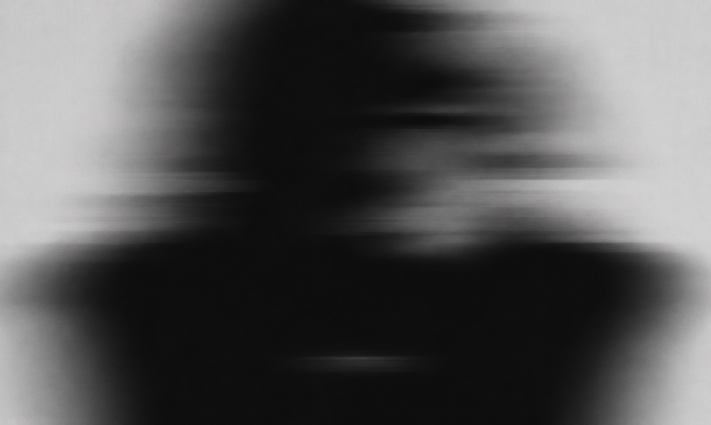

Conferi a referência hoje. Logo depois do manifesto, a seção fica presa e um bloco de 1000×600 gira −90° com a rolagem. A frente tem a palavra da marca em contorno, em 3 linhas de cópias que giram sem parar. A lateral tem um fundo desfocado com 10 retângulos aninhados e uma legenda curta no centro. No fim do giro, os retângulos seguem o mouse. Depois vem "(O que é único)", com dois parágrafos. Role dentro da janela e, no fim do giro, passe o mouse sobre a lateral.
A Floway transforma tecnologia em vantagem para o seu negócio. Estratégia, branding e inteligência artificial em soluções que simplificam processos e impulsionam negócios.
Boas experiências digitais não acontecem por acaso. Cada interação é uma oportunidade de aproximar marcas e pessoas. Na Floway, exploramos novas possibilidades da tecnologia e da inteligência artificial para criar experiências intuitivas, marcantes e feitas para gerar impacto.

Cada marca carrega uma identidade, uma visão e uma história própria. Nosso trabalho é interpretar esses elementos sob diferentes perspectivas, explorando a criatividade para construir uma presença digital autêntica, capaz de despertar interesse e estabelecer conexões duradouras.
Para dar vida a essa visão, combinamos tecnologia, inteligência artificial e atenção aos detalhes. Cada escolha tem um propósito: tornar a navegação mais intuitiva, valorizar a comunicação e transformar cada ponto de contato em algo relevante e memorável.